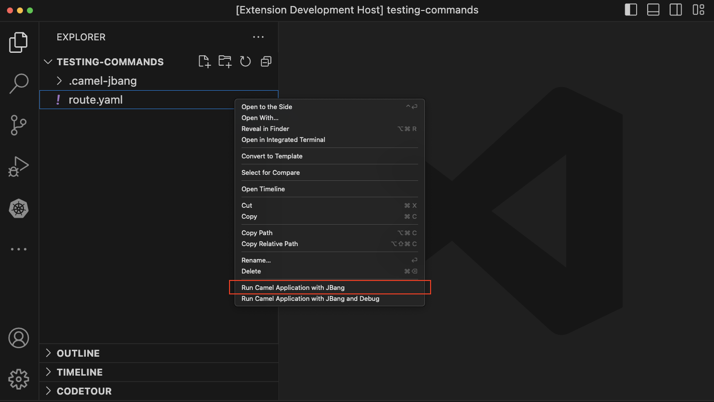
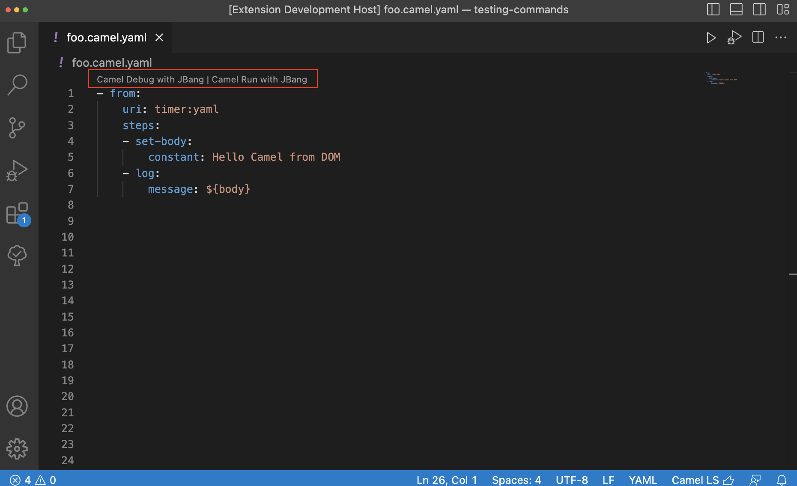
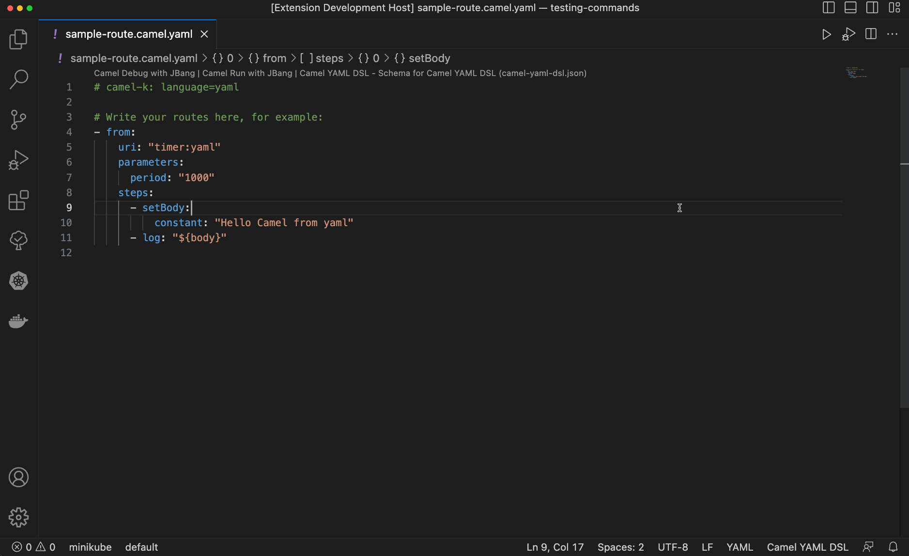
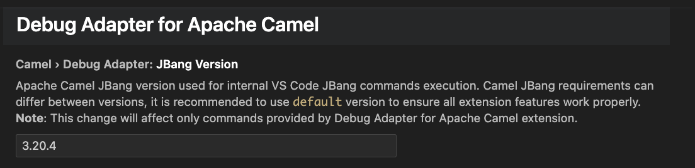

There is a new release of VS Code extension Debug Adapter for Apache Camel 0.7.0
Available at Visual Studio Marketplace and Open VSX Registry.
What’s changed
- Minimal version of Visual Studio Code to run this extension is 1.76.0
- Bump default Camel JBang version to 3.20.5
New features
Contextual Menu
Added missing Contextual Menu item, to allow users execute Run Camel Application with JBang from right-click on integration file.

Codelens
Added missing Codelens item, to allow users execute Camel Run with JBang from codelenses inside opened integration file.

Automatic Reloading
This release is enabling Camel JBang - Dev Mode with Live Reload. Currently it is available only for Run Camel Application with JBang command. This option is enabled by default.

Settings
Beginning this release, there is new setting available for Apache Camel JBang version, which is used by extension commands:
Run Camel Application with JBangRun Camel Application with JBang and Debug

What’s next
You can submit bugs, enhancement requests on the GitHub Issues or in the Red Hat Jira.